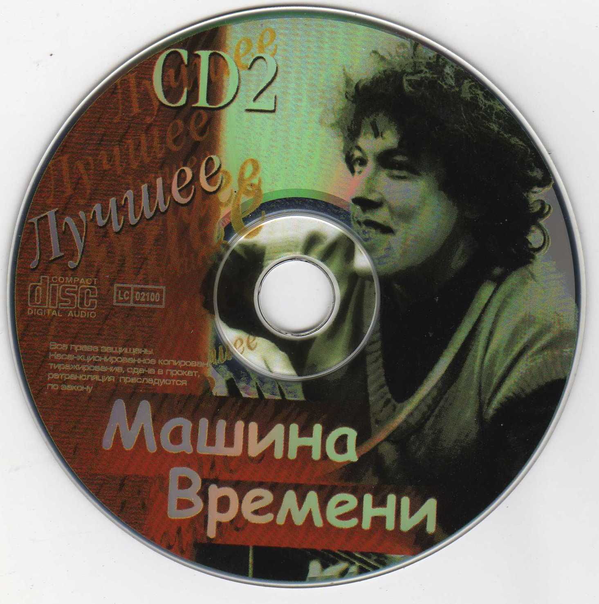

Whos the Best? ⬇

You can filter artists with buttons above
You can filter artists with buttons above
Here Los Angeles' Armenian rappers
Here some magicians of world music...
True Hip-Hop is here 3..2..1🧨
Shake your heads, Rock is coming 🎸

Tupac Amaru Shakur (born Lesane Parish Crooks; June 16, 1971 September 13, 1996), also known by his stage names 2Pac and Makaveli, was an American rapper, activist and songwriter. Considered to be one of the most influential and successful rappers of all time, academics regard him as one of the most influential music artists of the 20th century and also a politically conscious activist voice for Black America. Shakur is among the best-selling music artists, having sold more than 75 million records worldwide. His lyrical content has been noted for addressing social injustice, political issues, and the marginalization of other African-Americans, but he was also synonymous with gangsta rap and violent lyrics.

Nirvana was an American rock band formed in Aberdeen, Washington, in 1987. Founded by lead singer and guitarist Kurt Cobain and bassist Krist Novoselic, the band went through a succession of drummers, most notably Chad Channing, before recruiting Dave Grohl in 1990. Nirvana's success popularized alternative rock, and they were often referenced as the figurehead band of Generation X. Despite a short mainstream career spanning only three years, their music maintains a popular following and continues to influence modern rock culture.

Mashina Vremeni (Russian: Машина времени, 'Time Machine') is a Russian rock band founded in 1969. Mashina Vremeni was a pioneer of Soviet rock music and remains one of the oldest still-active rock bands in Russia. The band's music incorporates elements of classic rock, blues, and bard's song. Mashina Vremeni's best known members are Andrei Makarevich (founder, principal singer-songwriter, public face of the band), Alexander Kutikov (bass player and producer/sound engineer), and Evgeny Margulis (guitarist/songwriter).

Buena Vista Social Club was a musical ensemble primarily made up of Cuban musicians, formed in 1996. The project was organized by World Circuit executive Nick Gold, produced by American guitarist Ry Cooder and directed by Juan de Marcos González. They named the group after the members' club of the same name in the Buenavista quarter of Havana, a popular music venue in the 1940s. To showcase the popular styles of the time, such as son, bolero and danzón, they recruited a dozen veteran musicians, some of whom had been retired for many years.

Artis Leon Ivey Jr. (August 1, 1963 September 28, 2022), known by his stage name Coolio, was an American rapper. He was best known for his single "Gangsta's Paradise" (1995), which won a Grammy Award, and was credited for changing the course of hip hop by bringing it to a wider audience. Other singles included "Fantastic Voyage" (1994), "1, 2, 3, 4 (Sumpin' New)" (1996), and "C U When U Get There" (1997). He released nine albums, the first three of which achieved mainstream success: It Takes a Thief (1994), Gangsta's Paradise (1995), and My Soul (1997). Coolio first achieved recognition as a member of the gangsta rap group WC and the Maad Circle. Coolio sold 4.8 million albums in the U.S.

Eric Lynn Wright (September 7, 1964 March 26, 1995), known professionally as Eazy-E, was an American rapper who propelled West Coast rap and gangsta rap by leading the group N.W.A and its label, Ruthless Records. He is often referred to as the "Godfather of Gangsta Rap".

Elvis Aaron Presley (January 8, 1935 August 16, 1977), also known mononymously as Elvis, was an American singer and actor. Known as the "King of Rock and Roll", he is regarded as one of the most significant cultural figures of the 20th century. Presley's energized interpretations of songs and sexually provocative performance style, combined with a singularly potent mix of influences across color lines during a transformative era in race relations, brought both great success and initial controversy.

Emma Shapplin (born Crystêle Madeleine Joliton on 19 May 1974, in the Paris suburb of Savigny-le-Temple) is a French soprano. When she was 18, singer Jean-Patrick Capdevielle convinced her to return to taking classical lessons so as to improve her singing technique. She discovered that although rock had given her more artistic freedom and hedonistic lifestyle than classical music, it was still not enough for her, so she decided to create her own style. This became a combination of early opera, modern trance and pop music. Shapplin and Capdevielle subsequently worked together on her first release, Carmine Meo, written by Capdevielle.

Fu-Schnickens was composed of Chip Fu (Roderick Roachford), Moc Fu (Joe Jones), and Pac Fu (Lennox Maturine). Fu stood for unity and schnicken was a made-up word that meant "coalition". The three friends from East Flatbush, Brooklyn, first gained attention after performing at a hip hop event at Howard University, after which the group was signed by Jive Records. The group's debut single, "Ring the Alarm", entered the top ten on the Billboard Hot Rap Tracks chart in 1992, which sparked anticipation for the group's debut album, F.U. Don't Take It Personal, and also inadvertently immortalized and ignited a new-found popularity for the original "Ring the Alarm", the signature tune of dancehall reggae singjay Tenor Saw from 1985, which the group sampled to create its track of the same name. Furthermore, with the hit singles "La Schmoove" (featuring Phife Dawg of A Tribe Called Quest) and "True Fu-Schnick," the album reached the top 20 on the Top R&B/Hip-Hop Albums chart and was certified for gold-level sales by the RIAA.

Guns N' Roses is an American hard rock band from Los Angeles, California, formed in March 1985 when local bands Hollywood Rose and L.A. Guns merged. When they signed to Geffen Records in 1986, the band's "classic lineup" consisted of vocalist Axl Rose, lead guitarist Slash, rhythm guitarist Izzy Stradlin, bassist Duff McKagan, and drummer Steven Adler. The current lineup consists of Rose, Slash, McKagan, guitarist Richard Fortus, drummer Frank Ferrer and keyboardists Dizzy Reed and Melissa Reese.
Guns N' Roses is an American hard rock band from Los Angeles, California, formed in March 1985 when local bands Hollywood Rose and L.A. Guns merged. When they signed to Geffen Records in 1986, the band's "classic lineup" consisted of vocalist Axl Rose, lead guitarist Slash, rhythm guitarist Izzy Stradlin, bassist Duff McKagan, and drummer Steven Adler. The current lineup consists of Rose, Slash, McKagan, guitarist Richard Fortus, drummer Frank Ferrer and keyboardists Dizzy Reed and Melissa Reese.

Wu-Tang Clan is an American hip hop musical collective formed in Staten Island, New York City, in 1992. Its members include RZA, GZA, Method Man, Raekwon, Ghostface Killah, Inspectah Deck, U-God, Masta Killa, and, until his death in 2004, Ol' Dirty Bastard. Close affiliate Cappadonna later became an official member. They are credited for revitalizing East Coast hip hop and are considered one of the greatest hip hop groups of all time.

John Winston Ono Lennon (born John Winston Lennon; 9 October 1940 8 December 1980) was an English singer, songwriter and musician. He gained worldwide fame as the founder, co-lead vocalist and rhythm guitarist of the Beatles. His work included music, writing, drawings and film. His songwriting partnership with Paul McCartney remains the most successful in history as the primary songwriters in the Beatles.

Secret Garden is an Irish-Norwegian band specialised in new instrumental music, led by the duo consisting of Irish violinist and singer Fionnuala Sherry and Norwegian composer, arranger and pianist Rolf Løvland. The group came to fame when they won the 1995 Eurovision Song Contest, representing Norway with the composition "Nocturne". In the course of a partnership lasting over 25 years, they have sold millions of albums worldwide, many of which went platinum in numerous countries.

Tegui Calderón Rosario (born February 1, 1972) is a Puerto Rican rapper, singer and actor. He began his musical career in 1996 (as Tego Tec) and was supported by the famous Puerto Rican rapper Eddie Dee, who invited him on his second studio album, El Terrorista de la Lírica, released in 2000. Calderón reached international success in 2003 with his first album, El Abayarde, which sold 300,000 copies worldwide and was nominated for a Latin Grammy Award. His importance in reggaeton music led him to participate in Eddie Dee's 12 Discípulos album in 2004.

The Ying Yang Twins are an American hip hop duo consisting of Kaine (born Eric Jackson on December 16, 1978) and D-Roc (born Deongelo/D'Angelo Holmes on February 23, 1979). Despite the name, the duo are not twins, brothers or related in any way. They debuted in 2000 and rose to mainstream popularity in 2003 collaborating with Britney Spears on her album In the Zone and with Lil Jon on "Get Low". In 2004 and 2005, the Ying Yang Twins became more popular with party singles "Salt Shaker", "Wait (The Whisper Song)", "Shake" and "Badd".
Fu-Schnickens was composed of Chip Fu (Roderick Roachford), Moc Fu (Joe Jones), and Pac Fu (Lennox Maturine). Fu stood for unity and schnicken was a made-up word that meant "coalition". The three friends from East Flatbush, Brooklyn, first gained attention after performing at a hip hop event at Howard University, after which the group was signed by Jive Records. The group's debut single, "Ring the Alarm", entered the top ten on the Billboard Hot Rap Tracks chart in 1992, which sparked anticipation for the group's debut album, F.U. Don't Take It Personal, and also inadvertently immortalized and ignited a new-found popularity for the original "Ring the Alarm", the signature tune of dancehall reggae singjay Tenor Saw from 1985, which the group sampled to create its track of the same name. Furthermore, with the hit singles "La Schmoove" (featuring Phife Dawg of A Tribe Called Quest) and "True Fu-Schnick," the album reached the top 20 on the Top R&B/Hip-Hop Albums chart and was certified for gold-level sales by the RIAA.
Tupac Amaru Shakur (born Lesane Parish Crooks; June 16, 1971 September 13, 1996), also known by his stage names 2Pac and Makaveli, was an American rapper, activist and songwriter. Considered to be one of the most influential and successful rappers of all time, academics regard him as one of the most influential music artists of the 20th century and also a politically conscious activist voice for Black America. Shakur is among the best-selling music artists, having sold more than 75 million records worldwide. His lyrical content has been noted for addressing social injustice, political issues, and the marginalization of other African-Americans, but he was also synonymous with gangsta rap and violent lyrics.
Tupac Amaru Shakur (born Lesane Parish Crooks; June 16, 1971 September 13, 1996), also known by his stage names 2Pac and Makaveli, was an American rapper, activist and songwriter. Considered to be one of the most influential and successful rappers of all time, academics regard him as one of the most influential music artists of the 20th century and also a politically conscious activist voice for Black America. Shakur is among the best-selling music artists, having sold more than 75 million records worldwide. His lyrical content has been noted for addressing social injustice, political issues, and the marginalization of other African-Americans, but he was also synonymous with gangsta rap and violent lyrics.
Artis Leon Ivey Jr. (August 1, 1963 September 28, 2022), known by his stage name Coolio, was an American rapper. He was best known for his single "Gangsta's Paradise" (1995), which won a Grammy Award, and was credited for changing the course of hip hop by bringing it to a wider audience. Other singles included "Fantastic Voyage" (1994), "1, 2, 3, 4 (Sumpin' New)" (1996), and "C U When U Get There" (1997). He released nine albums, the first three of which achieved mainstream success: It Takes a Thief (1994), Gangsta's Paradise (1995), and My Soul (1997). Coolio first achieved recognition as a member of the gangsta rap group WC and the Maad Circle. Coolio sold 4.8 million albums in the U.S.

Nazo Bravo - Armenian American (The Anthem)
Armenian Emcee Cypher 2014
Armenian Emcee Cypher 2015
Armenian Emcee Cypher Final
Nazo Bravo - Before I Die (ft. A. Chilla)
Crazy Loc Presents Project 100 Armenian Cypher (Unity Mix) Prod By. Dropper
Nazo Bravo - Focus
Nazo Bravo - Hip Hop Baby (ft. Ras Kass & Rampage)
Nazo Bravo - Put It In Reverse (feat. E-40)
R-Mean feat. The Game and Marka - LOST ANGELS
The Jacka x Nazo Bravo x Cheats x Fly50 - 2 Live Crew
You Don't Impress Me (ft. YG Hootie)